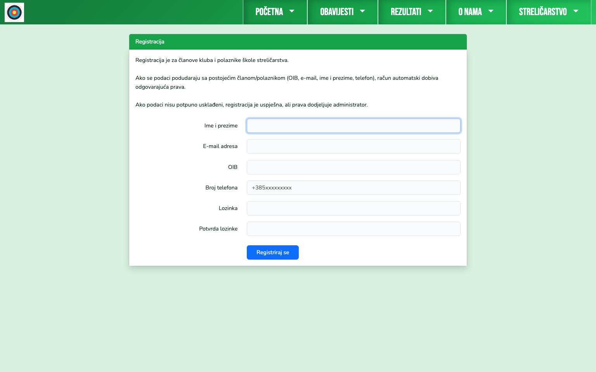
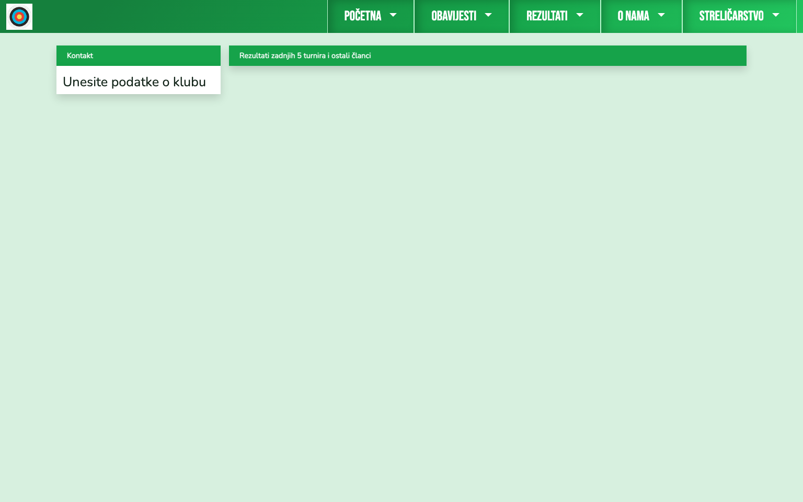
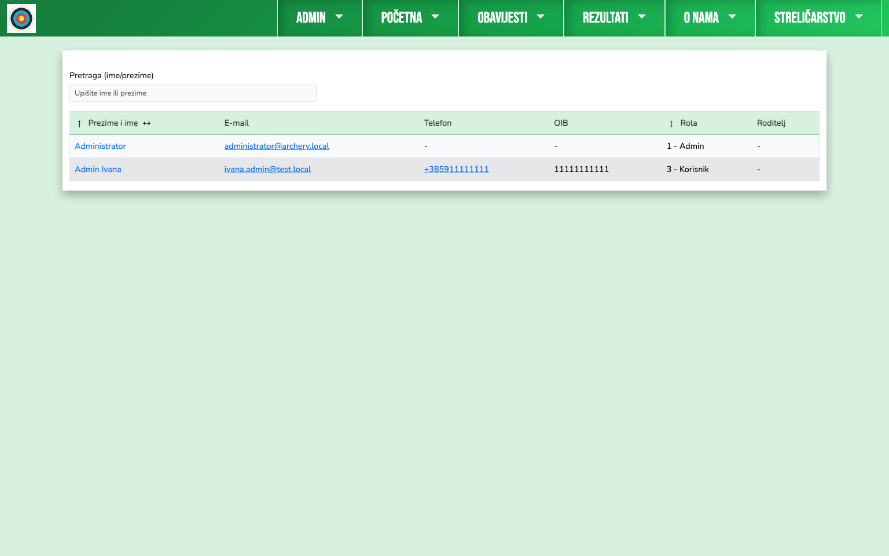
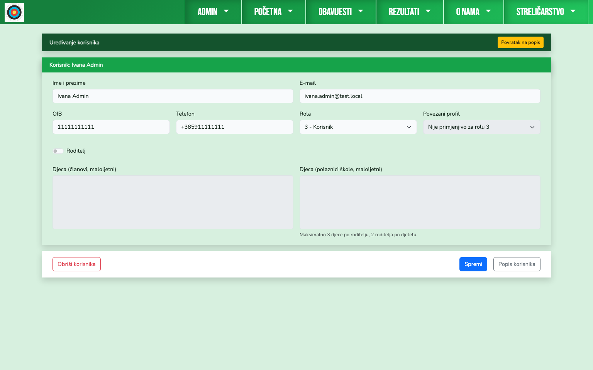
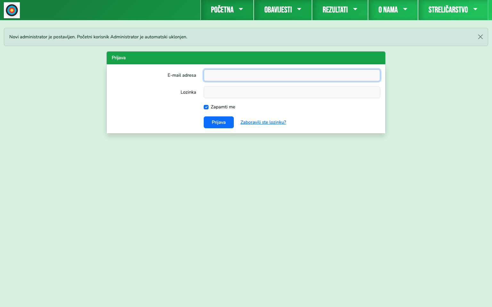
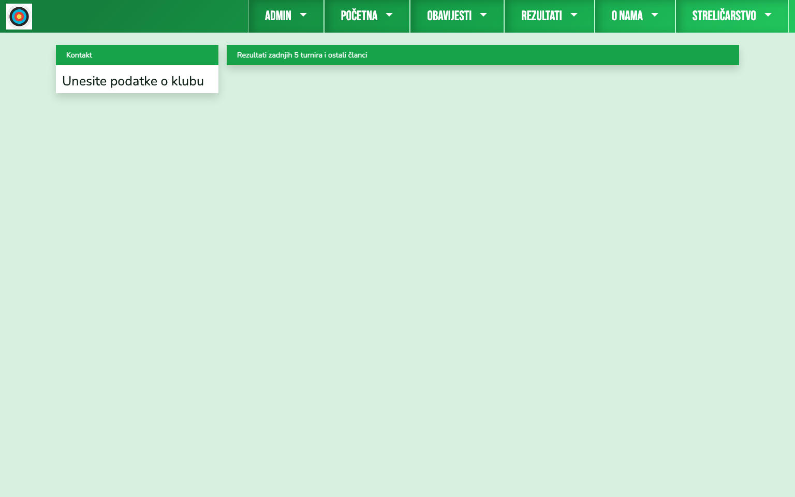

Upute za kori?tenje web stranice SK Dubrava
Sadr?aj
- Korisnik član - detaljne upute
- Polaznik škole streličarstva - detaljne upute
- Roditelj - detaljni priručnik
- Administrator - detaljni priručnik
- 1. Administratorski izbornik i početna orijentacija
- 2. Nadolazeći turniri i prijave
- 3. Plaćanja članova i škole
- 4. Podaci o klubu i osnovna sportska podešenja
- 5. Korisnici, role i povezivanja
- 6. Oglasnik i članci
- 7. Škola streličarstva
- 8. Teme i vizualni identitet
- 9. Klupski zid i moderiranje poruka
- Završna operativna napomena
- Instalacija i prvi koraci
Korisnik član - detaljne upute
Ovaj vodič je namjerno pisan opširnije, tako da se kroz njega može proći i bez tehničkog predznanja. Cilj nije samo pokazati gdje kliknuti, nego i objasniti zašto se neke opcije prikazuju, a neke ne, te kako prepoznati normalno ponašanje sustava.
1. Što se događa nakon registracije
Kada član otvori registraciju i unese svoje podatke, sustav ne radi samo izradu korisničkog računa. U isto vrijeme pokušava automatski povezati novi račun s postojećim profilom člana u bazi kluba.
Automatsko povezivanje se radi samo kada identitet stvarno odgovara postojećem članu. U praksi to znači da se podaci moraju podudarati kroz:
- OIB
- e-mail adresu
- ime i prezime
- broj telefona
Ako je podudaranje uspješno, račun odmah dobiva vezu na profil člana i članske ovlasti. Ako nije, registracija može biti uspješna, ali račun ostaje bez veze na člana dok administrator ne napravi ručno povezivanje.
Na slici ispod prikazano je: Naslovnica.
 Na slici ispod prikazano je: Registracija.
Na slici ispod prikazano je: Registracija.
 Na slici ispod prikazano je: Podaci za registraciju.
Na slici ispod prikazano je: Podaci za registraciju.
 Na slici ispod prikazano je: Prijava na site.
Na slici ispod prikazano je: Prijava na site.

2. Kako odmah prepoznati je li račun pravilno povezan
Nakon prve prijave najvažniji signal je izbornik Korisnik.
Kada je račun pravilno povezan s članom, uobičajeno se prikazuju stavke poput Profil, Prijave na turnire i Odjava. Ako je račun registriran, ali još nije povezan na člana, korisnik je prijavljen, no u izborniku najčešće ostaje samo Odjava.
To nije kvar, nego znak da je potreban kontakt s administratorom koji u administraciji korisnika postavlja odgovarajuću rolu i povezani profil člana.
Na slici ispod prikazano je: Provjera statusa.
 Na slici ispod prikazano je: Admin povezuje člana sa korisnikom.
Na slici ispod prikazano je: Admin povezuje člana sa korisnikom.
 Na slici ispod prikazano je: Prijavljeni kao član.
Na slici ispod prikazano je: Prijavljeni kao član.

3. Profil člana i dokumentacija
Profil člana je središnje mjesto za osobne podatke, sportske informacije i dokumentaciju. U sekciji Pregled dokumenata nalaze se podaci o dokumentima člana i liječničkim pregledima.
Važna stvar za razumjeti: član vidi svoje dokumente. U profilima gdje korisnik nema pravo na dokumente ta sekcija se u pravilu uopće ne prikazuje. Dakle, korisnik bez prava najčešće ne dobiva poruku o zabrani, nego taj dio sučelja jednostavno ne vidi.
Na slici ispod prikazano je: Profil korisnika.
 Na slici ispod prikazano je: Dokumenti i podaci.
Na slici ispod prikazano je: Dokumenti i podaci.

4. Treninzi člana
Modul Moji treninzi služi za osobnu evidenciju dvoranskih i vanjskih treninga. Član unosi rezultate po serijama, kasnije ih pregledava i po potrebi uređuje ili briše.
Sustav treninge veže na prijavljenog korisnika i njegov profil člana, pa unosi ostaju odvojeni po korisnicima i ne miješaju se između članova.
Na slici ispod prikazano je: Pregled treninga.
 Na slici ispod prikazano je: Unos treninga.
Na slici ispod prikazano je: Unos treninga.
 Na slici ispod prikazano je: Pregled i uređivanje treninga.
Na slici ispod prikazano je: Pregled i uređivanje treninga.

5. Popis članova i profil rezultata
Kroz izbornik O nama -> Članovi otvara se popis aktivnih članova. Tu se može otvoriti profil pojedinog člana i pregledati rezultate, rekorde i nastupe na turnirima.
Na slici ispod prikazano je: Popis članova.
 Na slici ispod prikazano je: Profil člana.
Na slici ispod prikazano je: Profil člana.

6. Prijave na turnire
Prijava na turnire je jednostavna forma, ali sustav u pozadini radi nekoliko važnih provjera. Prikazuju se turniri u dostupnom razdoblju (u pravilu sljedećih 60 dana), ne dopušta se dvostruka aktivna prijava istog člana na isti turnir, a prijave na zaključane turnire nisu dopuštene.
Kategorija se može promijeniti. Sustav samo predlaže početnu kategoriju prema dobi i spolu člana, ali korisnik može odabrati drugu dostupnu kategoriju iz ponuđenog popisa.
Na slici ispod prikazano je: Prijava na turnire.
 Na slici ispod prikazano je: Prijava na odabrani turnir.
Na slici ispod prikazano je: Prijava na odabrani turnir.
 Na slici ispod prikazano je: Pregled prijave.
Na slici ispod prikazano je: Pregled prijave.
 Na slici ispod prikazano je: Popis prijava na turnire.
Na slici ispod prikazano je: Popis prijava na turnire.

7. Kotizacije i plaćanja
Kod turnira postoje dvije varijante naplate kotizacije:
- gotovina
- plaćanje preko računa kluba
Ako je za turnir postavljeno plaćanje preko računa kluba, u prijavi i popisu prijava pojavljuje se poveznica na Plaćanja člana, gdje se vidi stanje, odabire stavka duga i prikazuju podaci za uplatu s barkodom.
Kod članarine (sezonske ili godišnje) član može imati više ponuđenih varijanti plaćanja. O odabranoj varijanti ovisi status člana u pojedinoj sezoni. Ako je odabrana podupiruća varijanta za dvoransku i/ili vanjsku sezonu, osoba i dalje ostaje član kluba, ali u toj sezoni nema pravo korištenja dvorane i/ili terena.
Važno: potvrde plaćanja radi administrator nakon uvida u bankovni izvod. Izvod se radi svakih 7 do 10 dana, pa ako je nešto plaćeno, a još nije evidentirano, to najčešće znači da administrator još nije napravio sljedeći uvid i označio da je uplata podmirena.
Kada uplata bude evidentirana, status prelazi na Plaćeno.
Na slici ispod prikazano je: Prijava na turnir koji se plaća preko računa.
 Na slici ispod prikazano je: Pregled prijave.
Na slici ispod prikazano je: Pregled prijave.
 Na slici ispod prikazano je: Popis prijava - link na plaćanje.
Na slici ispod prikazano je: Popis prijava - link na plaćanje.
 Na slici ispod prikazano je: Plaćanja.
Na slici ispod prikazano je: Plaćanja.

Na naslovnici se kod otvorenog duga prikazuju upozorenja tipa Potrebna uplata. To nije greška, nego podsjetnik da treba otvoriti modul plaćanja i podmiriti stavku.
Na slici ispod prikazano je: Naslovnica - obavijesti članu.
 Na slici ispod prikazano je: Naslovnica - članarina.
Na slici ispod prikazano je: Naslovnica - članarina.
 Na slici ispod prikazano je: Pregled plaćanja - članarina.
Na slici ispod prikazano je: Pregled plaćanja - članarina.
 Na slici ispod prikazano je: Upute za plaćanje ako ne želite plaćati barkodom.
Na slici ispod prikazano je: Upute za plaćanje ako ne želite plaćati barkodom.
 Na slici ispod prikazano je: Sva plaćanja su podmirena.
Na slici ispod prikazano je: Sva plaćanja su podmirena.

8. Oglasnik
Oglasnik služi za objavu, razmjenu i prodaju opreme. Član može izraditi oglas, dodati slike, kasnije ga uređivati, privremeno deaktivirati ili trajno obrisati.
Na slici ispod prikazano je: Oglasnik.
 Na slici ispod prikazano je: Kreiranje oglasa.
Na slici ispod prikazano je: Kreiranje oglasa.
 Na slici ispod prikazano je: Radnje sa oglasom.
Na slici ispod prikazano je: Radnje sa oglasom.
 Na slici ispod prikazano je: Vaš oglas.
Na slici ispod prikazano je: Vaš oglas.

9. Klupski zid
Svi članovi imaju pravo pisati poruke na Klupski zid. To je mjesto za kratke klupske obavijesti, dogovore i informacije koje želite podijeliti sa zajednicom.
Važno je znati da su poruke s Klupskog zida vidljive svim posjetiteljima stranice, uključujući i one koji nisu prijavljeni. Zato na zid nemojte upisivati osjetljive osobne podatke (npr. OIB, adrese, brojeve dokumenata ili medicinske podatke), nego samo sadržaj koji smije biti javan.
Završna napomena za člana
Ako nakon registracije ne vidite Profil i Prijave na turnire, najčešći uzrok je da račun još nije povezan s profilom člana. U toj situaciji treba kontaktirati administratora i poslati točne podatke korištene pri registraciji (ime i prezime, OIB, e-mail, broj telefona).
Kada je povezivanje dovršeno, članski prikaz i mogućnosti postaju dostupni odmah nakon sljedeće prijave.
Polaznik škole streličarstva - detaljne upute
Ovaj vodič opisuje kako sustav izgleda kada je korisnički račun povezan s profilom polaznika škole streličarstva. Naglasak je na tome što polaznik vidi i prati kroz svoj račun, a što administrativno održava klub.
1. Registracija i povezivanje
Polaznik se registrira svojim podacima. Kao i kod ostalih korisnika, sustav pri registraciji pokušava automatski povezati račun s postojećim profilom u bazi. Ako podaci odgovaraju, veza se napravi odmah; ako ne, administrator ručno dovršava povezivanje.
Na slici ispod prikazano je: Naslovnica i registracija.
 Na slici ispod prikazano je: Registracija.
Na slici ispod prikazano je: Registracija.
 Na slici ispod prikazano je: Provjera registracije.
Na slici ispod prikazano je: Provjera registracije.
 Na slici ispod prikazano je: Admin Vas povezuje sa profilom.
Na slici ispod prikazano je: Admin Vas povezuje sa profilom.

Nakon uspješnog povezivanja naslovnica počinje prikazivati blok Moji podaci škole streličarstva, s osnovnim statusom i brzim ulazom na detaljni profil.
Na slici ispod prikazano je: Naslovnica povezanog polatnika.

2. Profil polaznika
Profil polaznika je glavno mjesto pregleda podataka. U njemu se vidi osobni profil, stanje dolazaka i školarina.
Važno je znati da polaznik u pravilu pregledava vlastite podatke, dok uređivanje ključnih administrativnih stavki (npr. promjene modela školarine i potvrde uplata) radi administrator.
Na slici ispod prikazano je: Pregled profila.

3. Školarina i status uplata
U sekciji školarine prikazuju se stavke, status (plaćeno / nije plaćeno) i informativne poruke. Kada je stavka otvorena, na naslovnici i profilu pojavljuje se odgovarajuća obavijest.
Važno: potvrde plaćanja radi administrator nakon uvida u bankovni izvod. Izvod se radi svakih 7 do 10 dana, pa ako je nešto plaćeno, a još nije evidentirano, to najčešće znači da administrator još nije napravio sljedeći uvid i označio da je uplata podmirena.
Nakon što administrator potvrdi uplatu, status se ažurira i obavijest prelazi u uredno stanje.
Na slici ispod prikazano je: Pregled školarine.
 Na slici ispod prikazano je: Sve plaćeno.
Na slici ispod prikazano je: Sve plaćeno.
 Na slici ispod prikazano je: Sve plaćeno u profilu.
Na slici ispod prikazano je: Sve plaćeno u profilu.

4. Dolasci i praktična uporaba
Polaznik kroz svoj profil može redovito pratiti evidenciju dolazaka i promjene statusa školarine bez dodatne komunikacije za svaku pojedinu stavku. To olakšava praćenje obveza i daje jasan pregled što je već podmireno, a što još čeka potvrdu.
Ako se podaci ne prikazuju kako očekujete nakon registracije, najčešći uzrok je da korisnički račun još nije povezan s profilom polaznika. U tom slučaju administrator treba dovršiti povezivanje u modulu korisnika.
5. Klupski zid
Polaznici škole mogu pisati poruke na Klupski zid kroz svoje korisničke račune. Zid je namijenjen kratkim javnim obavijestima i porukama koje su korisne cijeloj zajednici.
Važno je znati da su poruke s Klupskog zida vidljive svim posjetiteljima stranice, uključujući i one koji nisu prijavljeni. Zato na zid nemojte upisivati osjetljive osobne podatke (npr. OIB, adrese, brojeve dokumenata ili medicinske podatke), nego samo sadržaj koji smije biti javan.
Roditelj - detaljni priručnik
Roditeljski račun je zamišljen kao zaseban, punopravan korisnički račun roditelja, kroz koji se pregledavaju podaci djeteta. To znači da roditelj ne treba i ne smije koristiti djetetov račun.
Najvažnija napomena prije svega:
- roditelj se registrira i prijavljuje kao roditelj, svojim podacima,
- ne prijavljuje se kao dijete,
- prijava kao dijete nije potrebna za roditeljski pregled, a može otvoriti pitanja privatnosti i prava djeteta (GDPR).
1. Kako roditeljski pristup nastaje
Nakon registracije roditeljskog računa sustav ne može sam pogoditi koje je dijete povezano s tim računom. Zato administrator u modulu korisnika mora uključiti roditeljsku oznaku i povezati dijete (član i/ili polaznik škole).
Tek nakon tog povezivanja roditeljski račun dobiva smisleni sadržaj na naslovnici i pristup profilima djece.
2. Roditelj člana kluba
Kod roditelja koji je povezan s djetetom članom kluba, sustav na naslovnici prikazuje blokove za dijete, stanje liječničkog i obavijesti o plaćanjima.
Na slici ispod prikazano je: Naslovnica.
 Na slici ispod prikazano je: Registracija.
Na slici ispod prikazano je: Registracija.
 Na slici ispod prikazano je: Registracija roditelja.
Na slici ispod prikazano je: Registracija roditelja.
 Na slici ispod prikazano je: Prijava na site.
Na slici ispod prikazano je: Prijava na site.
 Na slici ispod prikazano je: Provjera statusa.
Na slici ispod prikazano je: Provjera statusa.
 Na slici ispod prikazano je: Admin vas povezuje sa djecom.
Na slici ispod prikazano je: Admin vas povezuje sa djecom.
 Na slici ispod prikazano je: Pregled djece.
Na slici ispod prikazano je: Pregled djece.

Kada je dijete član, roditelj preko svog računa može:
- otvoriti profil djeteta člana,
- pregledati dokumente i status liječničkog,
- otvoriti pregled treninga djeteta,
- prijaviti dijete na turnir,
- otvoriti i pratiti plaćanja djeteta.
Na slici ispod prikazano je: Pregled djeteta.
 Na slici ispod prikazano je: Pregled podataka djeteta.
Na slici ispod prikazano je: Pregled podataka djeteta.
 Na slici ispod prikazano je: Prijava djeteta na turnir.
Na slici ispod prikazano je: Prijava djeteta na turnir.
 Na slici ispod prikazano je: Pregled prijave.
Na slici ispod prikazano je: Pregled prijave.
 Na slici ispod prikazano je: Pregled svih prijava.
Na slici ispod prikazano je: Pregled svih prijava.
 Na slici ispod prikazano je: Naslovnica sa podacima.
Na slici ispod prikazano je: Naslovnica sa podacima.

Kod turnirskih prijava roditelj može odabrati dijete iz padajuće liste i prijavljivati samo onu djecu koja su mu stvarno povezana u administraciji.
Plaćanja se vode kroz isti modul kao i za članove, pa roditelj može vidjeti otvorene stavke, birati dug za uplatu i koristiti podatke za plaćanje.
Važno: potvrde plaćanja radi administrator nakon uvida u bankovni izvod. Izvod se radi svakih 7 do 10 dana, pa ako je nešto plaćeno, a još nije evidentirano, to najčešće znači da administrator još nije napravio sljedeći uvid i označio da je uplata podmirena.
Na slici ispod prikazano je: Plaćanja.
 Na slici ispod prikazano je: Plaćanja ako ne koristite barcode.
Na slici ispod prikazano je: Plaćanja ako ne koristite barcode.
 Na slici ispod prikazano je: Plaćanje članarine.
Na slici ispod prikazano je: Plaćanje članarine.
 Na slici ispod prikazano je: Sve plaćeno za dijete.
Na slici ispod prikazano je: Sve plaćeno za dijete.
 Na slici ispod prikazano je: Pregled plaćanja.
Na slici ispod prikazano je: Pregled plaćanja.
 Na slici ispod prikazano je: Pregled članova.
Na slici ispod prikazano je: Pregled članova.

3. Roditelj polaznika škole streličarstva
Roditelj može biti povezan i s djetetom koje je polaznik škole. U toj varijanti fokus je na profilu polaznika, dolascima i školarini.
Na slici ispod prikazano je: Naslovnica i registracija.
 Na slici ispod prikazano je: Registracija.
Na slici ispod prikazano je: Registracija.
 Na slici ispod prikazano je: Provjera prijave.
Na slici ispod prikazano je: Provjera prijave.
 Na slici ispod prikazano je: Admin vas povezuje s djecom.
Na slici ispod prikazano je: Admin vas povezuje s djecom.

Kada je povezivanje napravljeno, roditelj otvara profil djeteta polaznika i vidi:
- osnovne podatke,
- evidenciju dolazaka,
- stanje školarine i otvorene stavke.
Na slici ispod prikazano je: Pregled polaznika - djeteta.
 Na slici ispod prikazano je: Pregled školarine.
Na slici ispod prikazano je: Pregled školarine.
 Na slici ispod prikazano je: Administrator je potvrdio upatu.
Na slici ispod prikazano je: Administrator je potvrdio upatu.
 Na slici ispod prikazano je: Pregled profila i školarine.
Na slici ispod prikazano je: Pregled profila i školarine.

Kod školarine sustav jasno razlikuje otvorene i podmirene stavke, a roditelj sve prati preko vlastitog računa bez potrebe za prijavom kao dijete.
Važno: potvrde plaćanja radi administrator nakon uvida u bankovni izvod. Izvod se radi svakih 7 do 10 dana, pa ako je nešto plaćeno, a još nije evidentirano, to najčešće znači da administrator još nije napravio sljedeći uvid i označio da je uplata podmirena.
4. Granice roditeljskog pristupa
Roditelj vidi samo djecu koja su mu stvarno povezana u administraciji. Ako dijete nije povezano, njegove sekcije neće biti dostupne roditeljskom računu.
To je namjerno ponašanje sustava i sigurnosna mjera:
- štiti privatnost djece,
- zadržava pregled samo na stvarno ovlaštene osobe,
- smanjuje mogućnost pogrešne obrade osobnih podataka.
5. Klupski zid
Roditeljski račun koji je pravilno povezan i ima roditeljske ovlasti može pisati poruke na Klupski zid. To je korisno za kratke javne poruke i obavijesti koje su relevantne široj zajednici kluba.
Važno je znati da su poruke s Klupskog zida vidljive svim posjetiteljima stranice, uključujući i one koji nisu prijavljeni. Zato na zid nemojte upisivati osjetljive osobne podatke (npr. OIB, adrese, brojeve dokumenata ili medicinske podatke), nego samo sadržaj koji smije biti javan.
Završna napomena za roditelje
Ako nakon registracije vidite samo osnovni korisnički izbornik bez podataka djece, najčešći uzrok je da administrativno povezivanje još nije dovršeno. U tom slučaju treba se javiti administratoru da potvrdi roditeljsku oznaku i doda odgovarajuće veze prema djetetu.
Administrator - detaljni priručnik
Administratorska uloga je operativno središte cijelog sustava. U praksi to znači da administrator vodi korisnike i ovlasti, postavlja i nadzire turnire, potvrđuje uplate, uređuje sadržaj stranice i održava osnovne klupske postavke.
Važna napomena za role: administrator može ujedno biti i član (ako je povezan na profil člana), pa za svoj profil može koristiti sve što koristi i član. Također, administrator može biti označen i kao roditelj, pa uz adminsko sučelje može imati i roditeljski pregled povezane djece.
1. Administratorski izbornik i početna orijentacija
Nakon prijave administrator u glavnoj navigaciji vidi dodatni izbornik Admin. Kroz taj izbornik ulazi se u sve ključne module: podešenja, nadolazeće turnire, plaćanja, korisnike, teme, članke i podatke o klubu.
Na slici ispod prikazano je: Admin menu.

2. Nadolazeći turniri i prijave
Modul Nadolazeći turniri služi za unos i održavanje kalendara turnira. Tu se može ručno dodati turnir, dopuniti tip turnira, definirati kotizacija, zaključati prijave i pripremiti sve prije nego članovi krenu s prijavama.
Na vrhu modula nalazi se i gumb za uvoz turnira s archery.hr, pa se popis nadolazećih turnira može brzo osvježiti za tekuću i sljedeću godinu bez ručnog unosa svakog pojedinog zapisa.
Na slici ispod prikazano je: Nadolazeći turniri.
 Na slici ispod prikazano je: Dodavanje turnira.
Na slici ispod prikazano je: Dodavanje turnira.

Na detalju pojedinog turnira administrator vidi sve prijave, može izvesti CSV za organizatora i po potrebi ukloniti člana s turnira uz obaveznu napomenu. Uklanjanje prijave ne briše trag, nego prijavu prebacuje u povijest uklonjenih.
Za turnire koji su završili administrator može iz modula prošlih turnira pokrenuti akciju Kreiraj rezultate. Time sustav iz prijava pripremi početni unos rezultata, a nakon toga administrator treba upisati stvarno ostvarene rezultate članova.
Na slici ispod prikazano je: Prijave i izvoz podataka.
 Na slici ispod prikazano je: Prijave i izvoz podataka - detalj.
Na slici ispod prikazano je: Prijave i izvoz podataka - detalj.
 Na slici ispod prikazano je: Prijave i izvoz podataka - detalj.
Na slici ispod prikazano je: Prijave i izvoz podataka - detalj.

3. Plaćanja članova i škole
Modul Plaćanja je kontrolna ploča za članarine, kotizacije i školarine. U njemu administrator podešava modele naplate, prati otvorene stavke i vidi sažetak po osobi i po statusu.
Na slici ispod prikazano je: Plaćanja.

Na popisu članova vidi se i stanje plaćanja, a na profilu člana administrator može potvrditi uplatu, mijenjati status i dodavati ručne stavke kada je to potrebno.
Važno: potvrde plaćanja treba označavati nakon uvida u bankovni izvod. Izvod se radi svakih 7 do 10 dana, pa u tom razdoblju može postojati uplata koja je stvarno izvršena, ali još nije administrativno označena kao podmirena.
Na slici ispod prikazano je: Popis članova - sa plaćanjima.
 Na slici ispod prikazano je: Admin radnje na članu.
Na slici ispod prikazano je: Admin radnje na članu.
 Na slici ispod prikazano je: Potvrda plaćanja.
Na slici ispod prikazano je: Potvrda plaćanja.

Za stavke koje se vode kao gotovina (npr. naplata treneru), status se također vodi kroz sustav kako bi izvještaji ostali točni.
Na slici ispod prikazano je: Plaćanja treneru.

4. Podaci o klubu i osnovna sportska podešenja
Admin -> Klub služi za održavanje službenih podataka kluba koji se koriste kroz cijelu aplikaciju, uključujući prikaz i generiranje podataka za uplatu.
Na slici ispod prikazano je: Podaci o klubu.

U modulu podešenja administrator održava osnovne sportske šifrarnike (tipovi turnira, stilovi, kategorije i polja rezultata). To je važno jer o tim postavkama ovise forme za unos rezultata i prijave.
Na slici ispod prikazano je: Osnovne stavke za unos rezultata.

5. Korisnici, role i povezivanja
U modulu Korisnici administrator upravlja identitetima i pravima pristupa. Tu se korisniku postavlja rola (Admin, Član, Korisnik, Polaznik škole), povezani profil i roditeljske veze.
Na slici ispod prikazano je: Popis korisnika.
 Na slici ispod prikazano je: Uređivanje korisnika.
Na slici ispod prikazano je: Uređivanje korisnika.

Praktično pravilo rada:
- rola određuje osnovna prava,
- povezani profil određuje čiji se podaci i moduli otvaraju,
- roditeljske veze određuju koja djeca su vidljiva roditeljskom računu.
Za roditeljske veze sustav primjenjuje ograničenja (djeca mlađa od 23 godine, maksimalan broj povezanih djece i roditelja po djetetu), pa administracija ostaje konzistentna i kontrolirana.
6. Oglasnik i članci
Administrator može moderirati i održavati sadržaj stranice kroz Oglasnik i Članke. To uključuje pregled objava, unos novih sadržaja, izmjene postojećih i objavu informacija važnih za rad kluba.
Na slici ispod prikazano je: Oglasnik.
 Na slici ispod prikazano je: Unos oglasa.
Na slici ispod prikazano je: Unos oglasa.
 Na slici ispod prikazano je: Unos članka.
Na slici ispod prikazano je: Unos članka.
 Na slici ispod prikazano je: Uređivanje članka.
Na slici ispod prikazano je: Uređivanje članka.

7. Škola streličarstva
U modulu škole administrator vodi aktivne i neaktivne polaznike, status školarine i evidenciju dolazaka.
Na slici ispod prikazano je: Polaznici škole.
 Na slici ispod prikazano je: Evidencija dolazaka.
Na slici ispod prikazano je: Evidencija dolazaka.

Na profilu polaznika administrator može:
- uređivati osobne podatke,
- voditi dokumente,
- postaviti model školarine i potvrđivati uplate,
- po potrebi prebaciti polaznika u članove.
Važno: potvrde plaćanja treba označavati nakon uvida u bankovni izvod. Izvod se radi svakih 7 do 10 dana, pa u tom razdoblju može postojati uplata koja je stvarno izvršena, ali još nije administrativno označena kao podmirena.
8. Teme i vizualni identitet
Kroz modul tema administrator bira i uređuje aktivni vizualni stil sučelja.
Na slici ispod prikazano je: Uređivanje teme.

Ovdje se centralno upravlja bojama i izgledom, pa se promjena odmah vidi na cijelom web sučelju.
9. Klupski zid i moderiranje poruka
Administrator može pisati poruke na Klupski zid kao i ostali ovlašteni korisnici. Uz to, administrator ima dodatne moderatorske ovlasti: može istaknuti bilo koju poruku na zidu i može obrisati bilo koju poruku.
Važno je znati da su poruke s Klupskog zida vidljive svim posjetiteljima stranice, uključujući i one koji nisu prijavljeni. Zato na zid ne treba upisivati osjetljive osobne podatke (npr. OIB, adrese, brojeve dokumenata ili medicinske podatke), nego samo sadržaj koji smije biti javan.
Završna operativna napomena
Najstabilniji način rada je da se svaka promjena radi redom: prvo korisnici i povezivanja, zatim sadržaj i postavke, pa tek onda operativni moduli poput prijava i plaćanja. Tako se izbjegnu situacije u kojima je funkcionalnost tehnički dostupna, ali korisnik zbog pogrešne role ili nepovezanog profila ne vidi očekivane opcije.
Instalacija i prvi koraci
Ovaj vodič pokriva cijeli put od prazne instalacije do prvog stvarnog administratora koji preuzima sustav.
1. Preduvjeti
Prije instalacije provjeri da je okruženje spremno:
- PHP 8.2+
- Composer 2+
- MySQL 8+
- Node.js 18+ i npm
- web server (Apache/Nginx) ili lokalno
php artisan serve
2. Osnovna instalacija projekta
U rootu projekta pokreni:
composer install
cp .env.example .env
php artisan key:generate
Zatim u .env postavi barem osnovne stavke:
APP_NAME="Archery Club"
APP_ENV=local
APP_DEBUG=false
APP_URL=http://localhost
DB_CONNECTION=mysql
DB_HOST=127.0.0.1
DB_PORT=3306
DB_DATABASE=your_database
DB_USERNAME=your_user
DB_PASSWORD=your_password
3. Baza, seed i asseti
Pokreni migracije i početni seed:
php artisan migrate --seed
Napravi storage link:
php artisan storage:link
Složi frontend assete:
npm install
npm run build
Za lokalni razvoj može i:
npm run dev
php artisan serve
4. Što seed automatski postavlja
Početni seed postavlja ključne početne podatke, između ostalog:
- stilove luka (
stilovis) - kategorije (
kategorijes) - tipove turnira i polja za unos rezultata (
tipovi_turniras,polja_za_tipove_turniras) - početne teme i aktivnu default temu
- bootstrap administratorski račun
Bootstrap admin podaci:
- e-mail:
administrator@archery.local - lozinka:
poklonOdSKDubrava
5. Prvi ulaz i obavezni handover administratora
Nakon seeda početna stranica je funkcionalna, ali sustav je još uvijek na privremenom bootstrap administratoru.
Na slici ispod prikazano je: Početna nakon instalacije.

Prvo registriraj stvarnog korisnika kluba (osoba koja će trajno biti administrator):
Na slici ispod prikazano je: Registracija.

Na slici ispod prikazano je: Nakon registracije.
Zatim se prijavi bootstrap admin računom i otvori Admin -> Korisnici:
Na slici ispod prikazano je: Bootstrap admin - korisnici.

Uredi stvarno registriranog korisnika i postavi mu rolu 1 - Admin, pa spremi:
Na slici ispod prikazano je: Promocija korisnika u admina.

Nakon spremanja sustav automatski:
- odjavljuje bootstrap admin sesiju,
- briše bootstrap korisnika,
- traži prijavu novog administratora.
Na slici ispod prikazano je: Bootstrap korisnik uklonjen.

Na slici ispod prikazano je: Novi admin prijavljen.
6. Produkcija (preporučeni oblik instalacije)
Za produkcijski deploy koristi:
composer install --no-dev --optimize-autoloader
php artisan migrate --seed --force
npm ci
npm run build
Ako deploy pipeline odvojeno rješava migracije/seed, prilagodi naredbe prema procesu tima.
7. Uvoz nadolazećih turnira (archery.hr)
Za uvoz kalendara koristi artisan komandu:
php artisan turniri:import-archery
Česti primjeri:
# pregled bez upisa
php artisan turniri:import-archery --year=2026 --dry-run
# uvoz nadolazećih turnira za godinu
php artisan turniri:import-archery --year=2026
# samo novi zapisi
php artisan turniri:import-archery --year=2026 --skip-existing
# uključi i prošle turnire
php artisan turniri:import-archery --year=2026 --include-past
8. Kratka provjera nakon instalacije
Instalacija se smatra uspješnom kada su ispunjena sva četiri uvjeta:
- aplikacija se otvara bez greške,
- stvarni korisnik je promoviran u admina,
- bootstrap admin više ne postoji,
Adminizbornik je vidljiv novom administratoru.